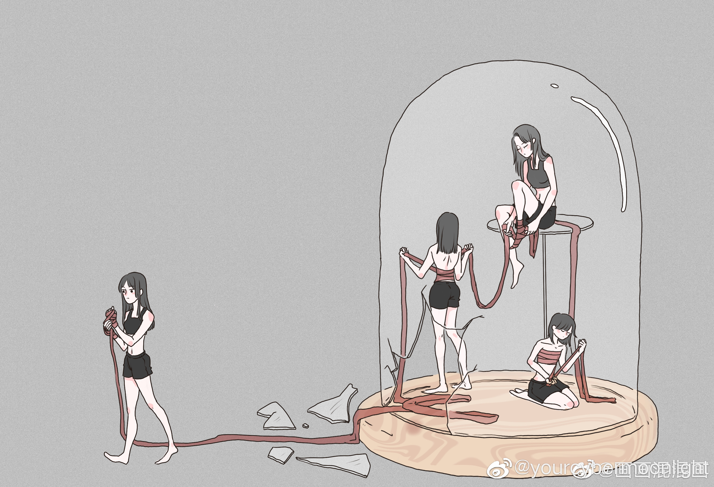

女权意识觉醒后，才觉得生活可以很爽。
@yourcybermoonlight:
为什么说女权意识觉醒是女性朋友们一生最大的幸运：
一些女性有没有觉得好奇，就是为什么一些女权博主说的话对男性“刻薄”到同为女人的你都觉得不好听很难接受——她们简直太异类了，难道她们天生脑子就变异，思维习惯与众不同吗？ 说句实话，除了个别家庭教育就很优秀的朋友，哪个女孩成长路上不是掉过坑吃过屎才慢慢一点点体察出日常生活一切秩序中的那种不对劲呢？
其实这个逻辑很好理解。女权意识觉醒之前的女人，活得很像电影《失控玩家》里生活在网游里的NPC男主角。他每天日复一日地重复着起床上班被杀的生活，说着重复的catch phrase，因为这是他的程序设定，他不需要质疑只需要遵守，也不需要操心那些“戴着眼镜的人”为什么可以随意杀人放火抢银行。直到那天，他偶然从一个人类玩家手里抢过来一副眼镜。那副眼镜一旦戴上就会让他发现自己生活的世界距离真实有多遥远。一位女性女权意识的觉醒，就像这副看透虚伪表象的开挂眼镜一样，是戴上了就摘不下来的。电影里男主角的朋友们，那些其他的NPC，在得知他们生活的世界是个虚拟存在网络游戏之前，是不是看着男主不再恪守遵循每天起床上班被杀的“规律生活”，都觉得男主角疯了？
如果你作为一位女性在社会生活中对一些事物的合理性产生了疑惑，比如，一位女性被男人在公共场所扒光衣服，这个男人的行为竟然不犯法——换言之，女性可以走在路上就被陌生人扒光而施害者不会付出任何成本。而不久之前，在另一个地方，一位女性被男人当街猥亵几乎强奸，在场看客多数是男性，拿起手机拍摄却没有一个人去制止强奸犯的暴行。
试问，你觉得这样的事情合理吗？公平吗？
对很多人来说，也许这就是你的那副开挂眼镜，是你女权觉醒的一次契机。而那些你曾经觉得无法理解的女权博主，她们的愤怒和呐喊，也是从她们曾经经历的一次小小的契机开始的。越去努力思考为什么这个世界是现在这个样子，你越会明白为什么女性不能不抗争。越去了解更多女权的历史和理论，越会明白为什么与男权秩序和解是极度愚蠢的。人为刀俎我为鱼肉，鱼肉去和刀刃说，“看，我是不是很好看，能不能不要把我剁得那么碎”，你觉得刀刃会理你吗？
男权秩序是男人定的，所以所谓的中立本来就是偏向男性利益。“在一个本就倾斜的天平上站得再直，人也是歪的。”男人永远不需要解释这个社会秩序和他们行为的正当性，因为他们都是在按规矩办事，系统就是这样设定的，所有对女性的剥削都是系统正常运行的毋庸置疑的表现。但一个女性一旦意识到了自己受到的侵害，她立刻就会被噤声。他们的方法很多，骂你是疯女人，骂你是荡妇，骂你是仙人跳，骂你是想红，让你丢掉工作，让你众叛亲离，让你抑郁让你让你自戕。一个女性一旦想要要求得到她本就应得的东西，比如平等的受教育权，平等的就业机会和薪酬，甚至是她自己生养的孩子的冠姓权，都会被男性污名化，被男权围剿。
那个在地铁里想要报警声讨踩坏她雨伞的女性，最终得到的待遇是衣服被扒光，周围的人不远不近地围观着，还有的男人录了像上传到外网，让全世界的人看她被迫裸露的身体。
他们还会给女人分类，让清纯的厌恶妖娆的，让大婆恨死小三，让婆婆和媳妇抢亲亲老公，让年长的嫉恨年轻的，让家鸡瞧不起野鸡，说读书多的是性饥渴的剩女，没读过书的是单纯的白纸一张。任劳任怨是女德，勇敢追梦是自私。但是女性们想没想过，凭什么女性要被男人这样分类？其实很简单，他们这样做是为了分化女性团结的力量，让女性形成必须依附男性力量才能生存的对同性的憎恨和恐惧。女性再也团结不起来，力量全部在内斗里自我消耗掉了，男权的秩序就得到了千秋万代的保障。他们多聪明啊。
李星星只有十四岁，但她是个骚浪贱搞仙人跳。鲍律师是个四十多岁美国人，但他单纯如少年还有一片赤诚爱国心。
为什么他成绩不如我，但是却能考上比我更好的学校更好的专业？这合理吗？
为什么我想离婚却离不了，哪怕他嫖娼家暴婚内强奸？这应该吗？
为什么他笑嘻嘻说下水道警告我却觉得很恐怖？他真的是在开玩笑吗？
为什么“先生”是女人的尊称，但“娘炮”却是骂人的话？
……
所以请你觉醒，不要再把你人生中的任何一秒钟耽于男权谎言之美，学会不再把脑袋埋在沙子里假装自己不是男人眼里任他宰割的一块鲜肉。男人嘴里的爱情不过是笼络性资源的谎言，在你眼里你本来就是鸡，是他想日的批，是个器官，是个洞。恩格斯在《家庭、私有制和国家的起源》里曾说过：“现代婚姻制度的存在是为了保障每一个男人都能合法蓄奴。” 从宏观角度看，核心家庭（一夫一妻加上子女）是终极维稳工具，女性的人格是被抹灭的，他们只把你看作奴隶和胎器。
女权觉醒也许不会是一件能让你变得开心的事，它会让你时刻感受到女性命运的交织和女性生存现状的窘迫，你会痛苦，会无助，会愤怒，而这正好！这样的你至少是清醒的，你没有委曲求全，也不会助纣为虐，你明白了自己的位置，也知道了为什么女权先辈们会付出生命的代价去争取女性的人权，也许，你还会理解为什么你曾经嫌弃过厌恶过的女权博主会说她们要说的话。这条路很难走，这条路很长，我们还在路上，但是幸好，女性从来不是一个人踽踽独行。
#我每天都在想什么集#
一些女性有没有觉得好奇，就是为什么一些女权博主说的话对男性“刻薄”到同为女人的你都觉得不好听很难接受——她们简直太异类了，难道她们天生脑子就变异，思维习惯与众不同吗？ 说句实话，除了个别家庭教育就很优秀的朋友，哪个女孩成长路上不是掉过坑吃过屎才慢慢一点点体察出日常生活一切秩序中的那种不对劲呢？
其实这个逻辑很好理解。女权意识觉醒之前的女人，活得很像电影《失控玩家》里生活在网游里的NPC男主角。他每天日复一日地重复着起床上班被杀的生活，说着重复的catch phrase，因为这是他的程序设定，他不需要质疑只需要遵守，也不需要操心那些“戴着眼镜的人”为什么可以随意杀人放火抢银行。直到那天，他偶然从一个人类玩家手里抢过来一副眼镜。那副眼镜一旦戴上就会让他发现自己生活的世界距离真实有多遥远。一位女性女权意识的觉醒，就像这副看透虚伪表象的开挂眼镜一样，是戴上了就摘不下来的。电影里男主角的朋友们，那些其他的NPC，在得知他们生活的世界是个虚拟存在网络游戏之前，是不是看着男主不再恪守遵循每天起床上班被杀的“规律生活”，都觉得男主角疯了？
如果你作为一位女性在社会生活中对一些事物的合理性产生了疑惑，比如，一位女性被男人在公共场所扒光衣服，这个男人的行为竟然不犯法——换言之，女性可以走在路上就被陌生人扒光而施害者不会付出任何成本。而不久之前，在另一个地方，一位女性被男人当街猥亵几乎强奸，在场看客多数是男性，拿起手机拍摄却没有一个人去制止强奸犯的暴行。
试问，你觉得这样的事情合理吗？公平吗？
对很多人来说，也许这就是你的那副开挂眼镜，是你女权觉醒的一次契机。而那些你曾经觉得无法理解的女权博主，她们的愤怒和呐喊，也是从她们曾经经历的一次小小的契机开始的。越去努力思考为什么这个世界是现在这个样子，你越会明白为什么女性不能不抗争。越去了解更多女权的历史和理论，越会明白为什么与男权秩序和解是极度愚蠢的。人为刀俎我为鱼肉，鱼肉去和刀刃说，“看，我是不是很好看，能不能不要把我剁得那么碎”，你觉得刀刃会理你吗？
男权秩序是男人定的，所以所谓的中立本来就是偏向男性利益。“在一个本就倾斜的天平上站得再直，人也是歪的。”男人永远不需要解释这个社会秩序和他们行为的正当性，因为他们都是在按规矩办事，系统就是这样设定的，所有对女性的剥削都是系统正常运行的毋庸置疑的表现。但一个女性一旦意识到了自己受到的侵害，她立刻就会被噤声。他们的方法很多，骂你是疯女人，骂你是荡妇，骂你是仙人跳，骂你是想红，让你丢掉工作，让你众叛亲离，让你抑郁让你让你自戕。一个女性一旦想要要求得到她本就应得的东西，比如平等的受教育权，平等的就业机会和薪酬，甚至是她自己生养的孩子的冠姓权，都会被男性污名化，被男权围剿。
那个在地铁里想要报警声讨踩坏她雨伞的女性，最终得到的待遇是衣服被扒光，周围的人不远不近地围观着，还有的男人录了像上传到外网，让全世界的人看她被迫裸露的身体。
他们还会给女人分类，让清纯的厌恶妖娆的，让大婆恨死小三，让婆婆和媳妇抢亲亲老公，让年长的嫉恨年轻的，让家鸡瞧不起野鸡，说读书多的是性饥渴的剩女，没读过书的是单纯的白纸一张。任劳任怨是女德，勇敢追梦是自私。但是女性们想没想过，凭什么女性要被男人这样分类？其实很简单，他们这样做是为了分化女性团结的力量，让女性形成必须依附男性力量才能生存的对同性的憎恨和恐惧。女性再也团结不起来，力量全部在内斗里自我消耗掉了，男权的秩序就得到了千秋万代的保障。他们多聪明啊。
李星星只有十四岁，但她是个骚浪贱搞仙人跳。鲍律师是个四十多岁美国人，但他单纯如少年还有一片赤诚爱国心。
为什么他成绩不如我，但是却能考上比我更好的学校更好的专业？这合理吗？
为什么我想离婚却离不了，哪怕他嫖娼家暴婚内强奸？这应该吗？
为什么他笑嘻嘻说下水道警告我却觉得很恐怖？他真的是在开玩笑吗？
为什么“先生”是女人的尊称，但“娘炮”却是骂人的话？
……
所以请你觉醒，不要再把你人生中的任何一秒钟耽于男权谎言之美，学会不再把脑袋埋在沙子里假装自己不是男人眼里任他宰割的一块鲜肉。男人嘴里的爱情不过是笼络性资源的谎言，在你眼里你本来就是鸡，是他想日的批，是个器官，是个洞。恩格斯在《家庭、私有制和国家的起源》里曾说过：“现代婚姻制度的存在是为了保障每一个男人都能合法蓄奴。” 从宏观角度看，核心家庭（一夫一妻加上子女）是终极维稳工具，女性的人格是被抹灭的，他们只把你看作奴隶和胎器。
女权觉醒也许不会是一件能让你变得开心的事，它会让你时刻感受到女性命运的交织和女性生存现状的窘迫，你会痛苦，会无助，会愤怒，而这正好！这样的你至少是清醒的，你没有委曲求全，也不会助纣为虐，你明白了自己的位置，也知道了为什么女权先辈们会付出生命的代价去争取女性的人权，也许，你还会理解为什么你曾经嫌弃过厌恶过的女权博主会说她们要说的话。这条路很难走，这条路很长，我们还在路上，但是幸好，女性从来不是一个人踽踽独行。
#我每天都在想什么集#
- 